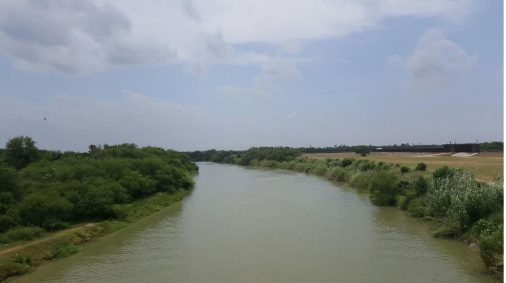
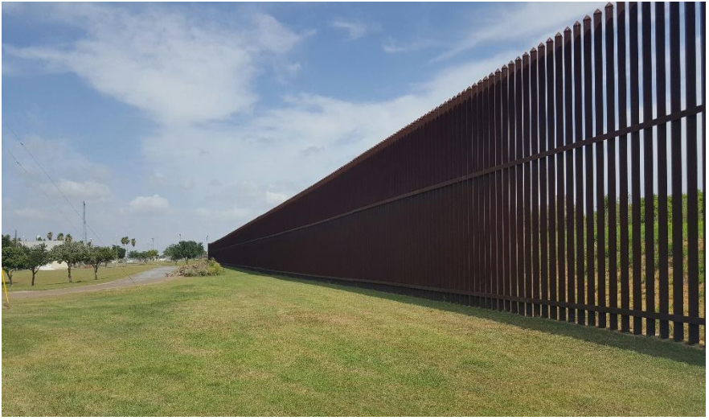

The Fence
You get close to touch it.
The steps you must’ve taken to get here.

What you must’ve dragged behind you.
How heavy your shadow.
El Salvador. Guatemala. Honduras.
Feel the steel under your hand.
As if touching your husband’s spine
for the last time.
See, it’s not as big as you imagined.
You thought that to scale it your feet
would have to go on climbing even
after your death.
But it’s so small.
Squint your eyes and see in the distance
a jackrabbit jumping it with ease.
See how you can pick it up with your fingers
and move it out of your way.
So small.
Like the country that lies ahead of you
and you know so well.
The one they keep taking away.
You’re here.
Get close.
Touch it.

Reach your hands between its open ribs.
Photos:
1) Rio Grande River, Progreso, TX.
2) Border Fence, Los Indios, TX
Poem first appeared in Kenyon Review Blog